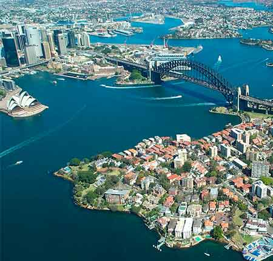

Conocé Sídney
Ubicación e historia
Sídney es la ciudad más grande y poblada de Australia y Oceanía, con una población en su área metropolitana cercana a los 4,92 millones, según una estimación de 2015.
Es la capital del estado de Nueva Gales del Sur y fue el asentamiento de la primera colonia británica en Australia. Fue fundada en 1788 por Arthur Phillip y es la ciudad más antigua del país. Toma su nombre de Thomas Townshend, “Lord Sydney”, en aquel entonces ministro del Interior británico.
La ciudad está situada al sureste de Australia, a orillas de la amplia bahía de Sídney (Puerto Jackson). Destaca la Casa de la Ópera, el puente de la bahía de Sídney, o Harbour Bridge, y sus playas. El área metropolitana está rodeada de parques nacionales que contienen bahías y ríos.


Geografía
El área urbana de Sídney se encuentra en una cuenca costera, que es bañada y bordeada por el océano Pacífico al este, las Montañas Azules al oeste, el río Hawkesbury al norte y el parque nacional Real al sur. Se emplaza en una costa subemergente, donde el nivel del océano ha aumentado hasta inundar los valles de los ríos profundos (formando una ría) y tallando en la arenisca de hawkesbury. El Puerto Jackson, más conocido como la bahía de Sídney, es una de esas rías y es el mayor puerto natural del mundo.
Clima
El clima de Sídney se clasifica como cálido y templado. La precipitación en Sídney es significativa, con precipitaciones incluso durante el mes más seco. La temperatura media anual en Sídney se encuentra a 18.0 °C, y el promedio de lluvias es de 912 mm.
Bandera

Australia fue descubierta en el año 1766 por los ingleses, y durante muchos años - exactamente hasta 1901 - perteneció al Imperio Británico.
Por esta razón, esa “banderita” que aparece en la esquina superior izquierda de la bandera de Australia, en efecto, es la del Reino Unido. Esta bandera ocupa a su vez las banderas de otros muchos países que algún día pertenecieron al Imperio.
Principales instituciones culturales
Sídney tiene una amplia variedad de instituciones culturales, como por ejemplo el CRH, el Teatro Estatal, el Teatro Real, el Teatro de Sídney y el Teatro Wharf y la icónica Ópera de Sídney, que tiene cinco salas capaces de albergar una amplia gama de estilos de interpretación, y es el hogar de la Ópera de Australia y de la Sinfónica de Sídney. El puente del puerto de Sídney fue construido en 1932 y es el primer puente del puerto. Fue el puente de un solo arco más largo del mundo.
-
Sydney Harbour Bridge (Puente del puerto de Sídney)
-
Royal Botanic Gardens (Jardín Botánico Real)
-
Royal National Park (Parque Nacional Real)
-
Sydney Town Hall (Ayuntamiento de Sídney)